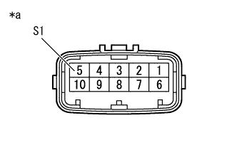
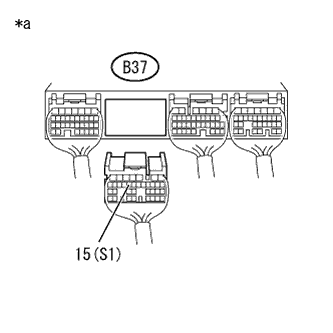
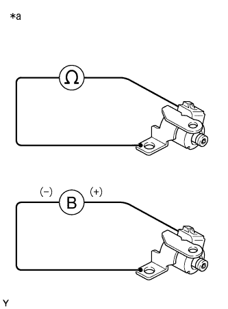

DTC P0973/62 S1 Solenoid system (LOW) |
DTC P0974/62 S1 Solenoid system (High) |
| symbol | Operating state |
|---|---|
| ○ | Power of power |
| × | Non -powered state |
| - | Failure |
| → | Change in Fail Safe |
| Shift position | S1 | S2 | Gear position |
|---|---|---|---|
| D position | ○ | ○ | First -speed |
| ○ | × | 2nd gear | |
| × | × | 3rd gear | |
| × | ○ | 4th gear | |
| 2 positions | ○ | ○ | First -speed |
| ○ | × | 2nd gear | |
| L position | ○ | ○ | First -speed |
| Shift position | S1 | S2 | Gear position |
|---|---|---|---|
| D position | - | ○ → × | 3rd gear |
| - | × | 3rd gear | |
| - | × | 3rd gear | |
| - | ○ | 4th gear | |
| 2 positions | - | ○ → × | 3rd gear |
| - | × | 3rd gear | |
| L position | - | ○ | 4th gear |
| Shift position | S1 | S2 | Gear position |
|---|---|---|---|
| D position | ○ | - | 2nd gear |
| ○ | - | 2nd gear | |
| × | - | 3rd gear | |
| × | - | 3rd gear | |
| 2 positions | ○ | - | 2nd gear |
| ○ | - | 2nd gear | |
| L position | ○ | - | 2nd gear |
| Shift position | S1 | S2 | Gear position |
|---|---|---|---|
| D position | - | - | 3rd gear |
| - | - | 3rd gear | |
| - | - | 3rd gear | |
| - | - | 3rd gear | |
| 2 positions | - | - | 3rd gear |
| - | - | 3rd gear | |
| L position | - | - | 3rd gear |
| DTC No. SAE/TCCS | DTC detection conditions
| Inspection site |
|---|---|---|
| P0973/62 |
|
|
| P0974/62 |
|
| Gear position | First -speed | 2nd gear | 3rd gear | 4th gear |
| Transmission Solenoid No.1 (S1) | ON | ON | OFF | OFF |
| Step 1 | Trans mission wire single inspection (transmission solenoid No.1 (S1)) |
|  |
Cut the transmission wire connector B10.
Use SST (Toyota Electrical Tester) to measure resistance between terminals.
| Inspection terminal | Inspection condition | Reference value |
|---|---|---|
| 5 (S1) -Body Earth | 20 ° C | 11 to 15Ω |
| *a | Connector non -connection status (Transmission wire) |
|
| ||||
| OK | |
| Step 2 | Wire harness and connector inspection (transmission wire -engine control computer) |
reference.|  |
Cut the connector B37 of the engine control computer.
Use SST (Toyota Electrical Tester) to measure resistance between terminals.
| Inspection terminal | Inspection condition | Reference value |
|---|---|---|
| B37-15 (S1) --Body Earth | 20 ° C | 11 to 15Ω |
| *a | Connector non -connection status (Transmission wire) |
|
| ||||
| OK | ||
| ||
| Step 3 | Transmission Solenoid No.1 (S1) Single inspection |
|  |
Remove the No. 1 (S1) transmission solenoid (S1).
Use SST (Toyota Electrical Tester) to measure resistance between terminals.
| Inspection terminal | Inspection condition | Reference value |
|---|---|---|
| Transmission Solenoid No.1 (S1) Connector -Body | 20 ° C | 11 to 15Ω |
| *a | Connector non -connection status (Transmission Solenoid No.1 (S1)) |
Connect a battery plus to the transmission Solenoid No.1 (S1) connector, and when the battery minus is connected to the solenoid body, check that the valve in the solenoid operates.
|
| ||||
| OK | ||
| ||